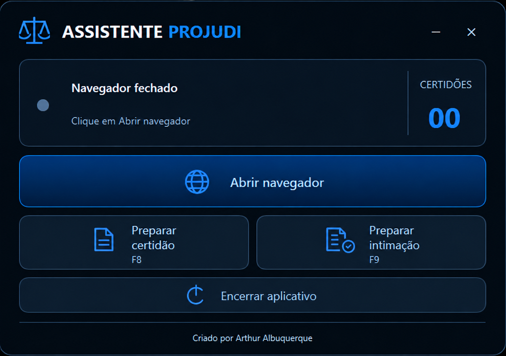

▤
Preparar certidão · F8
Auxilia na preparação e formatação da certidão, incluindo o link de reunião conforme o fluxo configurado.
Uma ferramenta independente de apoio à preparação de certidões e intimações no PROJUDI, criada para reduzir tarefas repetitivas sem substituir a revisão do usuário.

Automação assistida com etapas claras e controle do usuário.
Auxilia na preparação e formatação da certidão, incluindo o link de reunião conforme o fluxo configurado.
Seleciona e confere a pendência de intimação e avança até a tela de confirmação.
O usuário confere os dados e decide quando salvar. A automação não efetiva o salvamento final.
Um fluxo simples para usuários autorizados.
Após a liberação, obtenha o instalador pela página oficial do projeto.
Abra o navegador do aplicativo e autentique-se no PROJUDI com suas próprias credenciais.
Utilize F8 e F9 e confira cuidadosamente as informações antes do salvamento manual.
O download público será habilitado depois dos testes em outros computadores e da autorização para distribuição. Nenhum instalador está hospedado nesta versão do site.